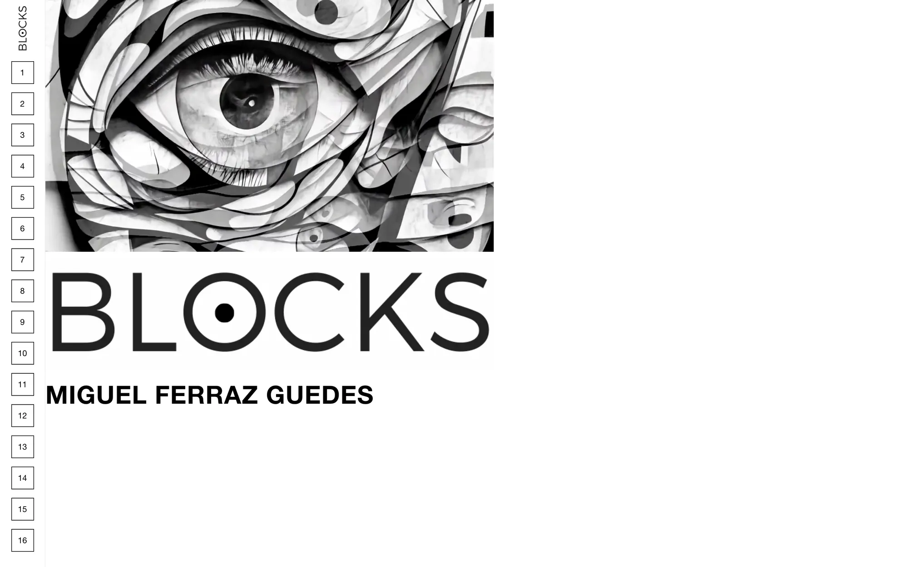
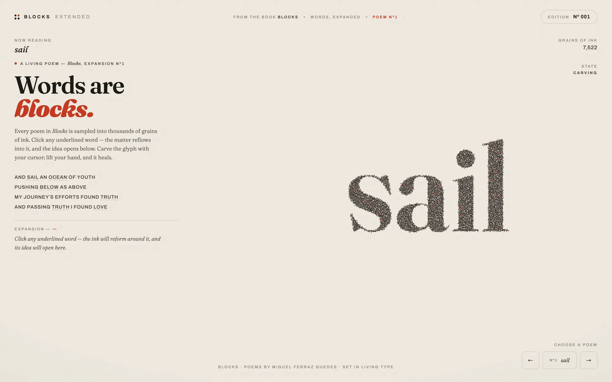
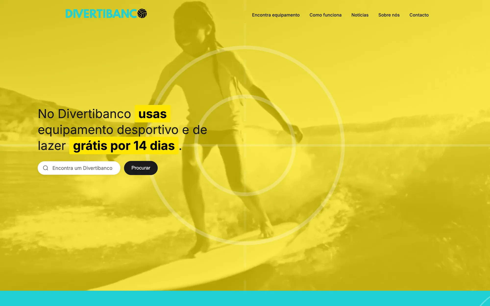
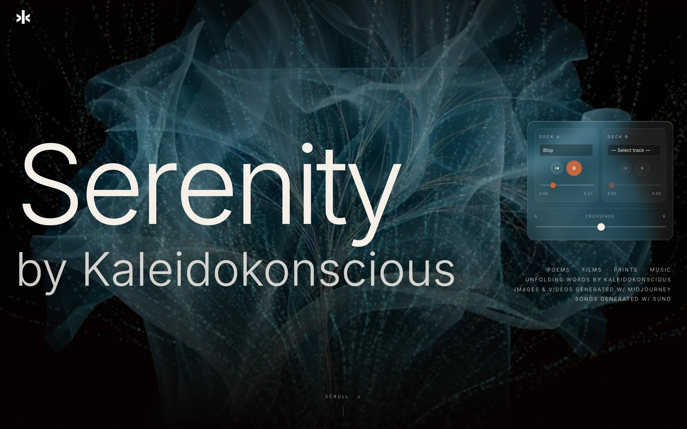
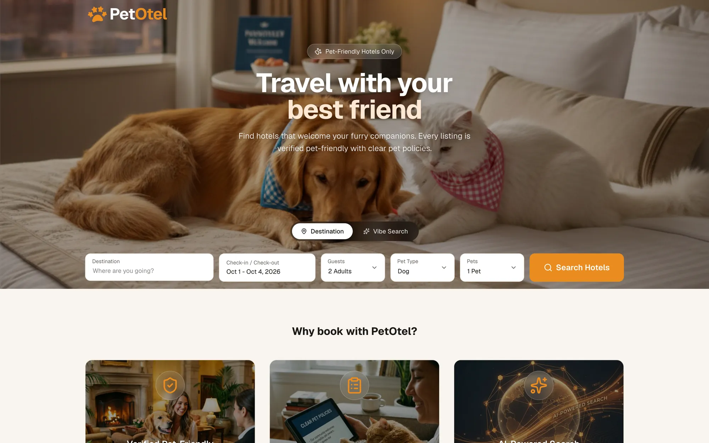

Trabalho selecionado
Websites, experiências WebGL, apps e plataformas — para marcas, artistas, cidades e ideias que ainda não existiam.

Alice in Brewland
Um café de brunch no Porto, contado como uma queda pela toca do coelho.

STAROT
Tarot, mapa astral e numerologia — desenhados por 52 000 estrelas.

MiKS
O site de um artista de afro-house que mistura as faixas sozinho, a tempo.

Sotkis
Gestão inteligente de resíduos: o website, a app do cidadão e a plataforma.

Fontes & Hora
Quarenta anos a trabalhar a terra — contados com o método de uma casa de família.

70/30
Reformados de ofícios e jovens aprendizes, lado a lado. 70% para o mentor, 30% para o aprendiz.

BLOCKS
O livro de poesia de Miguel Ferraz Guedes: 66 poemas numa edição web minimalista, a preto e branco.

Blocks Extended
A edição interativa: cada poema feito de milhares de grãos de tinta que se reúnem numa só palavra.

Divertibanco
Equipamento desportivo e de lazer, grátis durante 14 dias — encontra-o no teu bairro.

Serenity
Poemas, filmes, pinturas e música numa galeria em partículas — by Kaleidokonscious.

Museu Virtual
Exposições artísticas em realidade virtual, acessíveis de qualquer lugar.


Buddy
O hub para quem cuida de animais: triagem com IA, achados e perdidos, marketplace.

ROD
Aluguer de bicicletas e material de surf entre particulares.

PetOtel
Hotéis que recebem animais de estimação, com reserva em poucos toques.
Propostas & ideias com IA generativa.
Conceitos em que estamos a trabalhar — prontos para encontrar o parceiro certo.
Produção Dinâmica de Mídia
Conteúdos multimédia que se adaptam em tempo real ao feedback de quem os vê.
L02Plataformas Educacionais Adaptativas
Quizzes e conteúdos que se ajustam ao desempenho de cada aluno.
L03Hybrid Creative Workflows
Texto, imagem e vídeo gerados em conjunto para campanhas de marketing.
L04Interfaces Adaptativas para Dados
Perguntas em linguagem natural, respostas em visualizações.